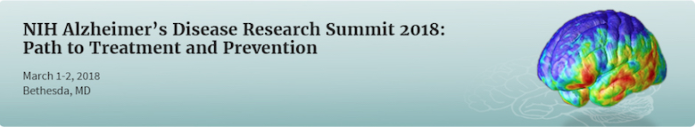
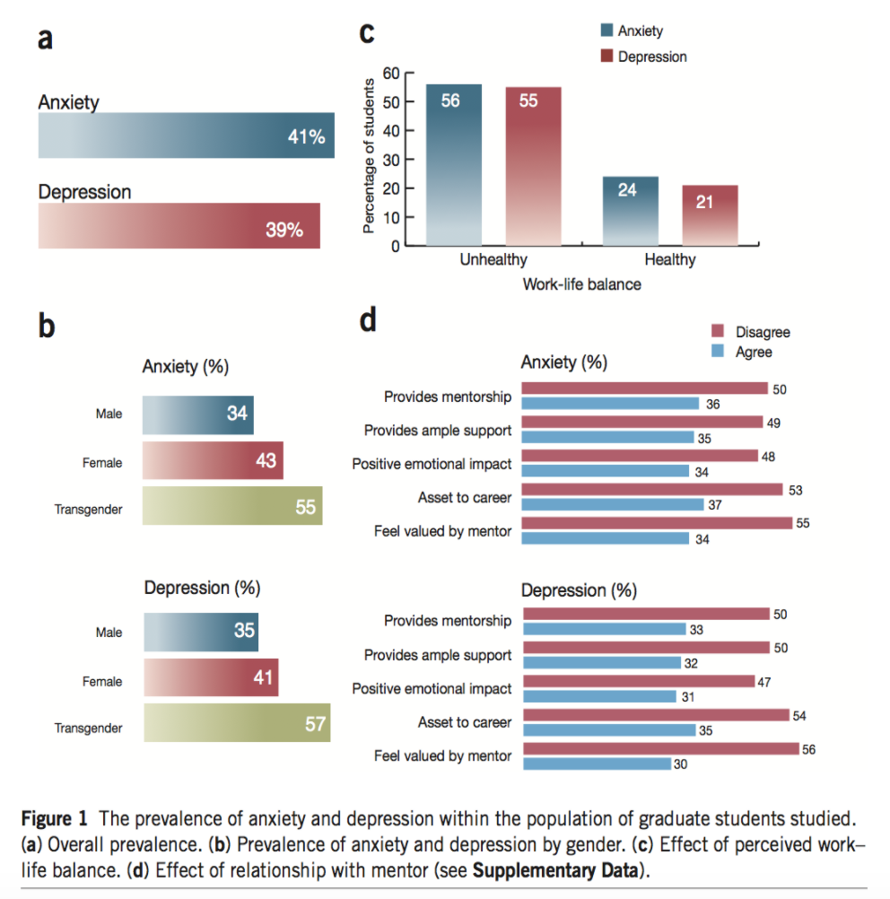
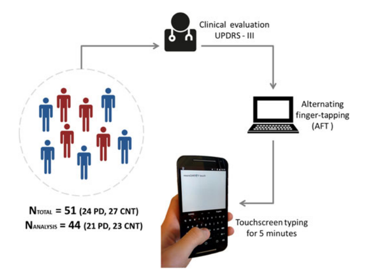
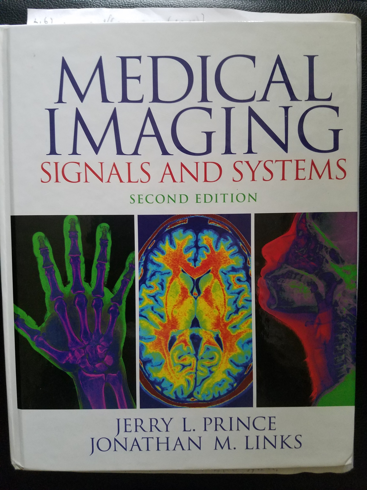
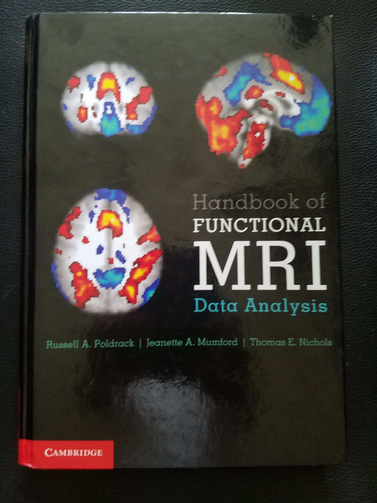
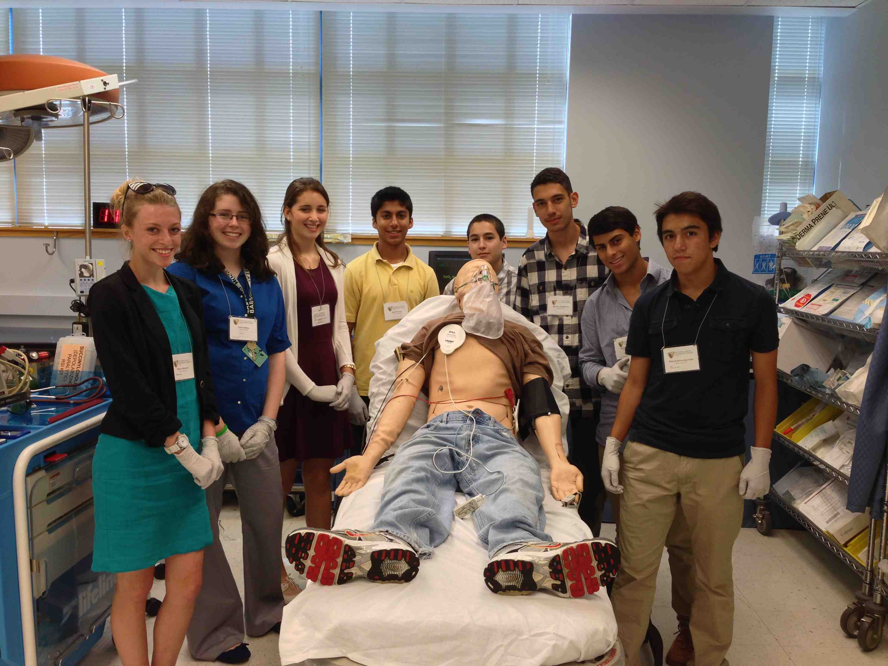

This site will discuss and share different studies dealing with the advances in the fields of Neuropsychiatry, Educational Neuroscience, and NeuroImaging. My research publication and software in relevant fields will also be released in this website. The research I focus on are the application of non-invasive techniques to access the different neurological and neuropsychiatric disorders. Through various research assistant and fellowship positions, I have acquired experience in image and signal processing, as well as, in statistical methods for the analysis of neurological data.
Click on the buttons for descriptions and current findings in the field menu:
Neuropsychiatry is a subfield of psychiatry related to mental or emotional disturbances to disordered brain function.
According to Eliezer Masliah, MD we need to start differentiating Alzheimer’s patients based on genetics, environmental exposure, and clinical history. This way a more personalize approach to treat individual Alzheimer’s patients can be integrated into the medical field. This could potentially affect the one-size-fits all model currently being employed. The director of the National Institute on Aging (NIA), Richard J. Hodes MD, "We must continue to foster creative approaches that leverage emerging scientific and technological advances, establish robust translational infrastructure for rapid and broad sharing of data and research tools, and work with funding partners and other stakeholders to cultivate and sustain an open science research ecosystem." The key to developing precision medicine in Alzheimer's disease will be data sharing: (Click on image to read the Article)
According to current investigations, the number of people living in with Alzheimer’s disease (AD) is expected to rise in the United States going from 5.2 million to 16 million. According to Michael Ehlers, chief scientific officer for Pfizer Neuroscience-related, “As our knowledge of brain function explodes, there remain a major need to translate these finding into a meaningful understanding of human brain function in health and disease.” As population age, the burden of Alzheimer’s disease and other dementia will consume a larger percentage of all medical dollars. According to J. Timothy Greenamyre, professor and vice-chair of neurology at the University of Pittsburgh Medical Center and director of the American Parkinson Disease Association Advanced Center for Parkinson’s Disease at the Pittsburgh Institute for Neurodegenerative Diseases, “The number of Ph.D.s that have been trained in the last 30 years has increased dramatically, but the number of physician scientist has decreased somewhat.” (sciencemag). Perhaps a cause could be to the great amount Ph.D. students (90%) that responded to a clinically validated scale anxiety and depression survey. Of all people responding to the survey 39% scored in the moderate to severe depression range, as compare to 6% of the general population: (click on image)
. Recent conducted longitudinal study accessed the association between cognitive engagement and the development of dementia later on in life. The study focused on individual residents of Hong Kong (median age of 74) who were diagnosed as dementia-free. The participants were monitored and observed during an average period of 5 years. According to the reports of Allen T.C. Lee, MBChB, of the Chinese University of Hong Kong, there is a significantly lower (P<0.001) chance for individuals who participant in daily intellectual activities to develop dementia than those who do not participate in cognitive activities. Of course since the study only examined residents of the Hong Kong area, this study cannot be extrapolated to individuals who live in other areas of the world. Lee’s group advices to be cautions to infer causal association between intellectual levels and incident dementia risk, as this was an observational study, not a control study, therefore there are various lurking variables that could possibly account for the association found between those two variables. The results revealed that older woman, who had lower educational attainment, more comorbidities, and less healthy diet were more likely to attain dementia for these population. The study did not perform genotyping or neuroimaging, which leaves an area of investigation wide open to investigate the role genomes and neuroactivity differ in older individuals who perform constant cognitive engaging activity.
Paper published in IEEE designs on mobile technology used for longitudinal tracking the symptoms of patients with Parkinson’s disease (PD). The technology could aid in the personalization of drug regimens and improve patient monitoring. Parkinson’s disease (PD) is a chronic neurological disorder that presents annually at an incident rate of 8-18 per 100,000 persons. The technology was developed to complete and complement the standard Unified Parkinson’s Disease Rating Scale (UPDRS) metric used for the clinical evaluation of PD. The AUC of 0.91 and 0.81/0.81 sensitivity/specificity for the proposed method out performed a clinical reference motor test of alternative finger-tapping (AFT) of an AUC of 0.85 with 0.75/0.78 sensitivity/specificity
Educational Neuroscience is an interdisciplinary field which focuses on merging together findings from various disciplines in cognitive neuroscience, developmental cognitive neuroscience, educational psychology, educational technology, and educational theory to explore the interactions between biological processes and education.
Interesting collaborative study of detecting which brain region are involved during active learning process of physics in children. Study revealed an increase in BOLD signal activity, after a Modeling Instruction approach of teaching introductory physics, in brain regions as the posterior cingulate cortex and in the frontal poles. These brain regions have been associated to episodic/self-referential thought and learning, respectively: (Click on the image to read the study)

2013 research investigation by scientist from carnegie mellon school of computer science revealed higher BOLD signal detection in brain areas involved in the comprehension of programming syntax errors, such as in those encountered in javascript, were found in the BA6:middle frontal gyrus, BA21:the middle temporal gyrus, BA40:inferior parietal lobule, BA44: region of the inferior frontal gyrus, BA47:region of the painferior frontal gyrus. These regions of the brain fall under the category of the Brodmann area. These brain regions have been previous associated with language processing. Therefore, this paper may provide initial evidence that learning a second language could be benificial at comprehending and understanding programming languages such as Javascript. One question that can be derived from these study, for further investigation, is if the same brain regions are activated if the short scripts provided in the study involve more numerically computational related algorithm rather than an algorithm such as the string reverse code, which involves the rearrangement of letters: (Click on the image to read the study)

NeuroImaging is the use of various techniques and technologies to directly or indirectly image the structure or function of the nervous system. Some common technologies used within this discipline are Magnetic Resonance Imaging (MRI), Functional Magnetic Resonance Imaging (fMRI), Electroencephalogram (EEG), Positron Emission Tomography (PET), among others.
Although not relevant to the imaging of structure or function of the nervous system, I still find it an interesting innovative way to image the mechanics and movements of the hand bone anatomy with MRI. The new study at NYU examined the promise of their newly design MRI glove prototype. The study author say the promise their MRI glove prototype has at becoming a useful tool for the diagnosis of strain injuries such as carpal tunnel syndrome: (Click on the image to read the study)

University of Virginia has created a new imaging technique called “polarized nuclear imaging”. The techniques combines the most powerful aspects of both magnetic resonance imaging and gamma-ray imaging. The physicists who developed this new imaging modality in the University of Virginia’s department of physics and radiology mentioned they are combining “the advantages of using highly detectible nuclear tracers with the spectral sensitivity and diagnostic power of MRI technique.” The main difference in the imaging techniques lies in the use of the radioactive isotope of xenon that has been polarized using laser technique rather than the imaging of protons in the MRI. The polarized nuclear imaging technique detects gamma rays that are emitted from the xenon isotope rather than radio waves like with the MRI. The researchers included the first picture produced by the new imaging modality demonstrating the images quality exceeds the first image produced by the MRI in a Nature paper produced in 1973
This is a very technical book that would be useful to read for professionals in the field of medical imaging
This book gives a very light introduction to the different statistical methodological analysis of FMRI. It is not really heavy with mathematical notations

This experience is very good at introducing high school students to the medical training of a physician
The knowledge one can acquire through the Grove School of Engineering-Biomedical Engineering program at CCNY is outstanding
Dalton H Bermudez
CV.pdfLinkedIn Website:
https://www.linkedin.com/in/dalton-bermudezEmail: neuropsychneuroimagresearch@gmail.com
Bermudez D.“Teaching Strategy for introducing linear algebra at an early stage of education.” LinkedIn. (2018) View Paper
Bermudez D., “Implication of Cauchy-Riemann equations in the MRI k-space.” Manuscript in Preparation.
Bermudez D., “Implementation of Machine Learning Algorithm to Uncover Lurking Features
from Non-simultaneous fMRI/EEG Fused data-sets.”
ARPHA Journal. Manuscript # 9128. In
Review.
Bermudez D., Veeraraghavan H., Young R., “Application of DeBlur GAN towards the removal
of MRI phase-encoding motion artifact.”
Manuscript in Preparation.
Florent T., Bermudez D., Veeraraghavan H., Young R., “Complementary value of radiomics
features and genetic biomarkers in high grade glioblastoma.”
Manuscript in Preparation.
Cabrera Bermudez D., Steyrl D., Müller-Putz G., Pock T. “Implementation of Machine Learning Algorithm to Exploit Information from Multimodal fMRI/EEG Fused Image Data.”
Marshall Plan Website. (2017) View Paper
Bermudez D., Maass-Moreno R, Cahid Civelek A., “Effectiveness of CT-based Attenuation
Correction in SPECT/CT Compared to Chang Attenuation Correction.”
Abstract for the
Society of Nuclear Medicine and Molecular Imaging Annual Meeting, Manuscript in Preparation.
Bermudez D., Rubinstein Z., Zhu Z.,Owusu B., Khoo J, Edwards D.,Vazquez M., Bikson M., Garanich J. “3D Brain Mapping of TMS, MRI, and Real Time Muscle Response.”
CCNY Senior Design (2016) View Poster
Bermudez D., Maass-Moreno R., Cahid Civelek A. “Accuracy of CT-based Attenuation Correction in SPECT/CT Gamma camera images.”
National Institute of Health (NIH), Natcher Conference Center (Bldg. 45) (2016) View Poster
Bermudez D. “Matlab Script: Implementation of Support Vector Machine to Classify impaired from non-impaired paw in Parkinson’s rodent model.”
In Progress.
Bermudez D. “Develop open source PYTHON base algorithm to assist in the examination of the coupled effects of the frequency-phase encoding on the MRI space domain.”
In Progress.
Bermudez D. “Python Algorithm for Simulation of Phase-encoding motion artifacts.” GitHub (2018) View Code
Bermudez D. “Python Pipeline based algorithm to assist in the analysis and visualization of Motor Evoked Potential (MEP) map distribution acquired from Transcranial Magnetic Stimulation (TMS)”. GitHub (2018) View Code
2018 @ The Neuropsychiatric & NeuroImaging Research Blog.